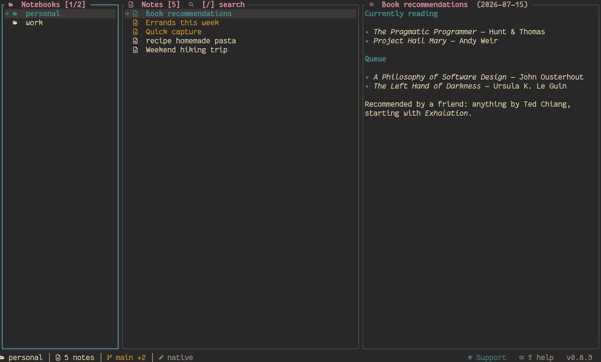

buymeacoffee.com/sazarcode) — opens in the default browser cross-platform via a new shiki_core::browser::open_url.scripts/demo-gif.sh, recorded with VHS) covering global and in-notebook fuzzy search (with a real cross-notebook jump), tags, real multi-select with a batch delete, creating and moving folders, writing a full note from scratch in the inline editor, a git commit, and live theme switching — featured in the hero of the marketing site (playing on page load) and in a dedicated Demo section, plus README.md.L in PREVIEW) — the selected note's outgoing [[wikilinks]] (resolved against every note in the notebook, any folder depth — not just its own directory) plus every other note that links back to it, with Enter jumping straight to either. shiki_core::wikilinks already had extract/resolve written but nothing called them; resolve is also fixed to search the whole notebook recursively instead of only a note's own directory.~/.config/shiki/trash/) instead of removing it permanently; leader+u restores the most recently deleted note/folder (or whole batch, from a Visual-mode delete) — one level of undo, not a full history.a (new note) now opens a template picker after the title — every .md file in ~/.config/shiki/templates/ plus a "blank" option — instead of always starting from an empty body. The chosen template's name is recorded in the note's own template frontmatter field.gruvbox-dark theme instead of catppuccin-mocha.u.